地政学
セントジョンズはリーワード諸島の小国首都で、港、官庁、外交、海上保安、災害対応が集まります。大国ではないからこそ、観光、気候資金、海洋権益、地域協力を粘り強く交渉する都市です。島の声を束ねる要所です。
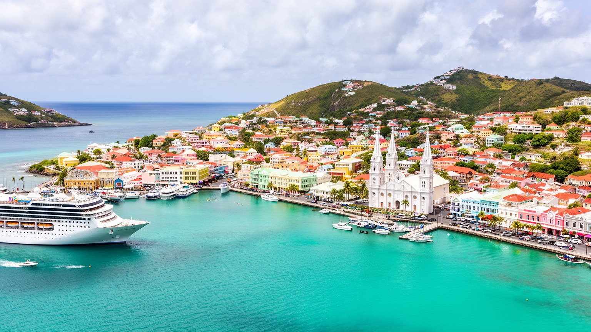
🇦🇬 アンティグア・バーブーダ / アンティグア島 / World City Atlas
アンティグア島西岸の港を中心に広がる首都です。クルーズ桟橋、官庁、市場、大聖堂、植民地期の記憶、観光経済、住宅格差、ハリケーンへの備えが近い距離で重なります。
都市の骨格
セントジョンズは大都市ではありませんが、国家行政、港湾、クルーズ観光、島内交通、買い物、学校、信仰の中心です。小さな市街地が、アンティグア島の多くの生活線を受け止めます。
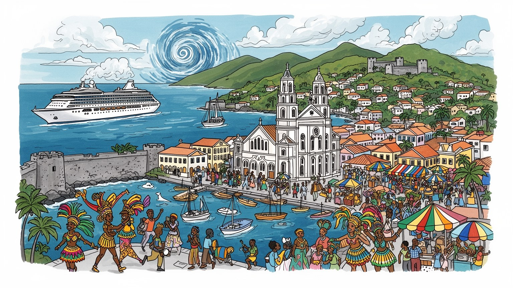
セントジョンズはリーワード諸島の小国首都で、港、官庁、外交、海上保安、災害対応が集まります。大国ではないからこそ、観光、気候資金、海洋権益、地域協力を粘り強く交渉する都市です。島の声を束ねる要所です。
観光、港湾、行政、小売、金融、建設、教育、タクシー、清掃、飲食が雇用を作ります。クルーズ船の到着は売上を動かす一方、季節変動と物価高が働く人の暮らしを揺らします。日々の収入差も街路に濃く現れます。
大聖堂、教会、カーニバル、クリケット、クレオール語、移民の食文化が都市の暦を作ります。奴隷制と砂糖の記憶を抱えながら、音楽、信仰、家族行事が島の誇りを日常へ戻します。街角にも今もなお濃く残ります。
旅行者は港、市場、要塞、ビーチへ向かうが、住民は住宅費、輸入物価、排水、交通、学校、医療、ハリケーンへの備えと向き合います。小さな首都は、休暇地の顔と生活都市の顔を併せ持ちます。毎日の重さも続きます。
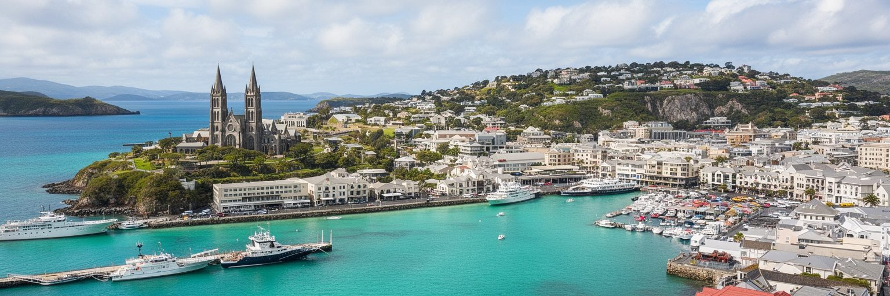
セントジョンズは、アンティグア島西岸の湾に開いた港から都市としての力を得ています。クルーズ桟橋、貨物港、官庁、銀行、裁判所、商店、市場、大聖堂が短い距離に集まり、国全体の行政と消費を引き寄せます。市域人口は小さいですが、島内の通勤者、学生、買い物客、タクシー運転手、船員、観光客が日中に流れ込み、統計以上の密度を作ります。港は美しい海の眺めである前に、食料、燃料、建材、医薬品、観光客、郵便、税関手続きが通る実務の場所です。島国では港の遅れが物価や工事、ホテルの仕入れに直結します。首都の道路が狭く、駐車や排水に余裕が少ないため、船の到着、豪雨、学校の送迎、官庁の用事が重なると都心はすぐ混み合います。港湾の近代化は経済に必要ですが、住民の歩行環境、古い街区、海辺の公共性を失えば、首都は通過するだけの場所になります。港の周辺には観光向けの明るい区画と、古い住宅や小売店、修理業が近接し、誰のための水辺にするのかが常に問われます。防災倉庫や岸壁の維持も、普段は地味ですが島の安心を支える仕事です。港の管理能力は、災害後の復旧速度にも直結します。セントジョンズを読む時は、湾の美しさと税関の列、官庁の手続きと市場の買い物、クルーズ客の短い滞在と住民の長い日常が同じ街路に重なることを見る必要があります。
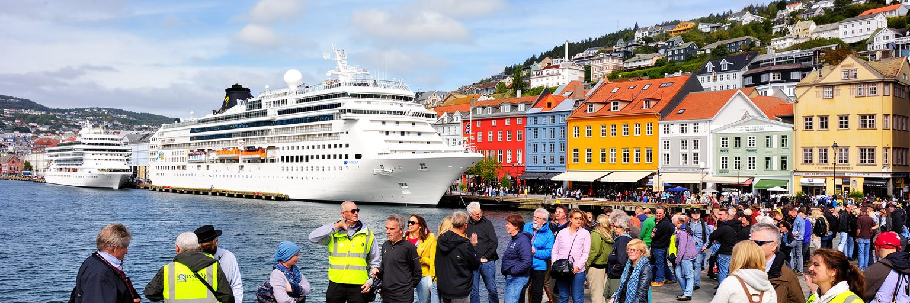
セントジョンズの観光は、空港からリゾートへ向かう滞在客だけでなく、港に入るクルーズ船によって強く動きます。ヘリテージ・キーやレッドクリフ・キー周辺には土産物店、宝飾店、飲食店、案内所、タクシーが並び、寄港日は短い時間に大きな人の波が生まれます。観光客は市場、大聖堂、フォート・ジェームズ、近郊ビーチ、ネルソンズ・ドックヤード方面へ向かいますが、消費が港の限定された区画に偏れば、古い中心街や小さな商店へ十分に届きません。クルーズ観光は外貨と雇用を生む一方、船会社の交渉力、季節変動、感染症、燃料価格、ハリケーン、国際景気に左右されます。店員、ガイド、運転手、清掃、警備、港湾職員は船の予定に合わせて働きますが、寄港しない日は収入が落ちます。観光地として魅力を保つには、港から街へ歩きやすい道、分かりやすい歴史案内、日陰、公共トイレ、安全、地元事業者への導線が重要です。さらに、短時間の客を急いで運ぶだけでは、会話や学びが生まれにくく、都市は背景として消費されてしまいます。旅行者が短時間で写真だけを撮って戻る都市ではなく、住民の市場や信仰、食、音楽へ敬意を持って触れられる都市にできるかが、観光の質を決めます。セントジョンズの課題は、寄港の量を増やすことだけではなく、短い滞在を街全体の利益へ広げることです。
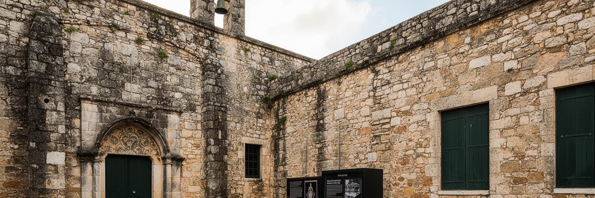
セントジョンズの街路には、英国植民地支配、砂糖プランテーション、奴隷制、解放、商港としての成長が重なっています。白い塔を持つ大聖堂、古い商業街区、港の倉庫、博物館、要塞は、観光写真に収まりやすい風景ですが、その背後には強制労働と土地支配の歴史があります。アンティグアは砂糖経済によって世界市場へ組み込まれ、多くのアフリカ系住民の祖先は自由を奪われた労働の中で島の社会を作りました。解放後も土地所有、賃金、教育、政治参加の不平等は残り、現在の住宅や所得の差にも影を落とします。歴史的建物を保存することは、植民地の装飾を美しく残すだけでは足りません。誰がその建物を建て、誰が港で働き、誰が市場を支え、誰の声が公文書に残らなかったのかを説明する必要があります。学校や博物館が地域の言葉でこの歴史を伝えれば、観光の説明は住民の記憶の回復にもなります。家族名、教会の記録、墓地、古い道にも、公式史だけでは拾えない記憶が残ります。大聖堂の高台から港を見下ろすと、宗教、商業、権力、労働が一つの地形に置かれてきたことが分かります。セントジョンズを歩く価値は、明るい島都の色彩の中に、苦い過去と独立後の誇りを同時に読める点にあります。記憶を隠さず語ることは、観光を深くし、住民が自分たちの都市をより確かに受け継ぐ条件になります。
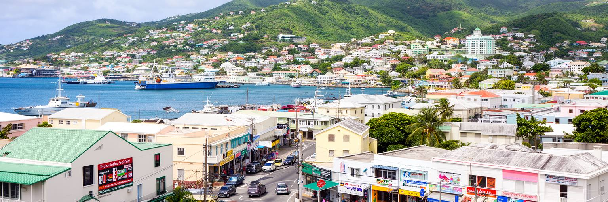
アンティグア・バーブーダの経済は観光に大きく依存し、セントジョンズはその収入を行政、金融、小売、港湾、交通へ変える場所です。国の名目GDPは小さいですが、一人当たりで見るとカリブ海の中では高い水準にあります。ただし数字の豊かさは、すべての住民の安定を意味しません。食料、燃料、建材、車、機械、医薬品の多くを輸入に頼るため、為替、輸送費、世界価格の上昇は家計へすぐ届きます。観光が好調な時はホテル、タクシー、飲食、建設、清掃、警備、土産物店に仕事が広がりますが、航空便やクルーズの減少、災害、国際不況で収入は急に縮みます。小さな市場では若者が専門職を見つけにくく、公務員や観光関連の職に選択肢が偏りやすいです。首都の金融機関や官庁は国家経済を支えますが、地域の小商人、屋台、修理店、学校、教会も日常の経済を動かしています。納税、営業許可、銀行口座、送金、保険の手続きが首都に集まるため、制度へ近づけるかどうかも事業の差になります。女性の小商い、家族経営、季節労働も見逃せない雇用の層です。経済の多角化は、情報サービスや教育、文化産業、農業、海洋関連事業を育てることでもあります。セントジョンズの街角を見ると、島国の経済が外貨を得る産業と、輸入品を買いながら生活を保つ家庭の間で成り立っていることが分かります。
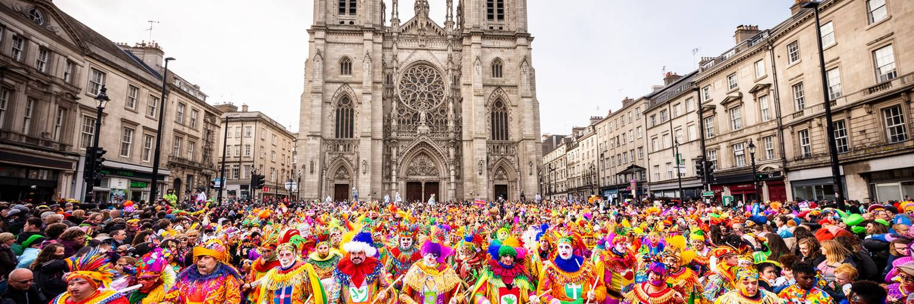
セントジョンズの文化は、教会の鐘、日曜礼拝、学校行事、カーニバル、クリケット、ラジオ、街角の会話によって毎年更新されます。大聖堂は都市の象徴であり、各地区の教会は葬儀、結婚、慈善、子どもの教育、地域の相談を支えます。信仰は観光客が見る建物だけではなく、家族の節目や近所の助け合いに深く関わります。カーニバルは音楽と衣装の華やかな祭りであると同時に、解放の記憶、植民地支配への風刺、若者の表現、商業活動、地域の誇りが交わる公共文化です。スティールパン、カリプソ、ソカ、ダンス、衣装制作、音響、屋台、警備、清掃が関わり、祝祭の背後には長い準備と労働があります。観光向けの演出が強くなるほど、地域の作り手や若い参加者が意味を受け継げるかが大切になります。移民の増加によって、ドミニカ、ガイアナ、ジャマイカ、ドミニカ共和国などの食、言葉、信仰も街に加わります。教会や学校、スポーツクラブは、世代と出身地の違う人を結び、若者が役割を得る場にもなります。カーニバルの準備期間は、縫製、音響、演奏、料理の技能が街で交換される時間でもあります。多文化性は明るい混合だけでなく、仕事、在留、言語、差別、学校での受け入れを調整し続ける日常です。セントジョンズの祝祭を読むことは、島の社会が過去の痛みを音と身体へ変え、現在の共同体を作り直す過程を見ることです。
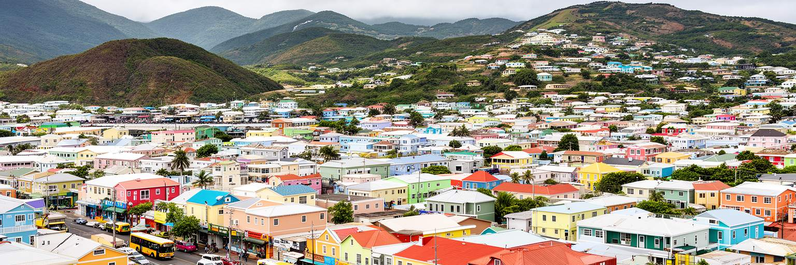
セントジョンズの暮らしは、港と官庁に近い便利さと、住宅費、物価、交通、排水、老朽建物の負担が同居します。市街地には古い木造やトタン屋根の家、商店と住居が混ざる建物、郊外へ伸びる住宅地があり、仕事や学校に近い場所ほど土地は限られます。国全体では観光収入に支えられた所得水準が見えますが、輸入物価が高く、若い世帯や低所得層には家賃、食費、交通費、保険、修理費が重くのしかかります。都心の再開発や観光向け整備は街を明るくしますが、長く住んだ人や小商人が中心部から押し出される危険もあります。住民の生活を考える時は、建物の見た目だけでなく、雨漏り、暑さ、停電、医療への距離、学校への通学、夜の安全、排水路の管理まで見る必要があります。島の小さな社会では親族や教会、近所の支えが重要ですが、制度的な住宅政策や災害に強い建築も欠かせません。特に高齢者や車を持たない家庭では、店、診療所、バス停への近さが生活の安心を左右します。賃貸の不安や修理費の遅れは、家族の健康と学習環境にも影響します。観光客が港から数時間歩く街と、住民が毎日買い物をし、子どもを迎え、仕事から帰る街は同じ場所です。セントジョンズの都市の質は、旅行者に見える通りだけでなく、中心部近くで働く人が地域で安心して住み続けられるかによって測られます。
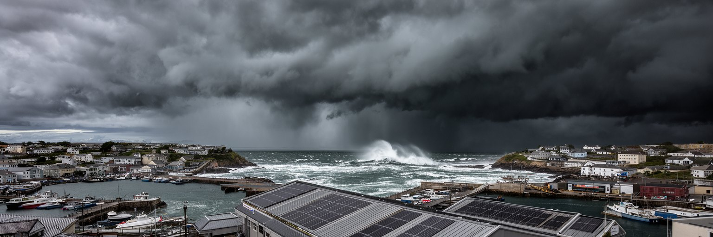
セントジョンズは日差し、貿易風、乾季と雨季を持つ熱帯の島都ですが、気候の魅力は災害リスクと表裏一体です。ハリケーン、強雨、高潮、海面上昇、暑さは、低い港湾、古い排水路、住宅地、観光施設、電力、水道、空港への道に影響します。アンティグア・バーブーダは小さな島国であるため、一つの強い嵐が住宅、学校、港、ホテル、漁船、政府財政を同時に傷つけます。セントジョンズでは排水の詰まりや道路の冠水が、通勤、買い物、救急、港湾物流を止めることがあります。災害への備えは、避難所や気象情報だけでなく、屋根の固定、建築基準、保険、貯水、停電対策、側溝清掃、港の復旧計画、低所得世帯への支援を含みます。観光経済は美しい天候を売りますが、災害後に最も早く収入を失うのも観光、タクシー、飲食、小売で働く人々です。暑さが強まれば、屋外で働く港湾労働者、露店、警備員、通学する子どもへの負担も増えます。停電時の通信、薬の保管、避難所までの移動も、平時から準備しておくべき課題です。復旧資材の確保も重要です。気候変動への適応は国際会議の言葉ではなく、毎年の雨季に街路を歩けるか、学校が開けるか、店が商品を守れるかという生活の問題です。セントジョンズの海辺を読む時は、青い湾の魅力と、低地の脆さ、復旧に必要な財政力を同時に見る必要があります。
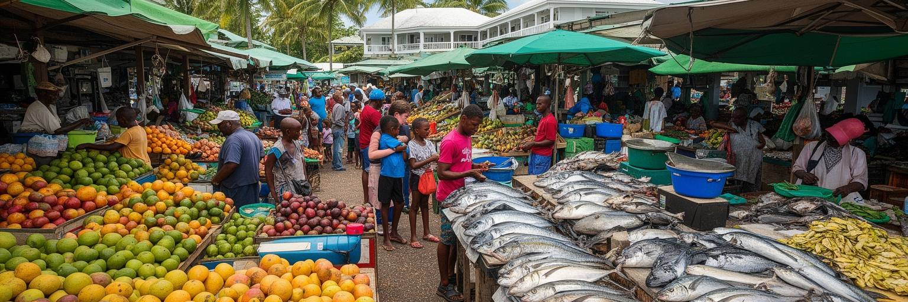
セントジョンズの市場は、首都の日常を読むための大切な場所です。魚、果物、野菜、スパイス、肉、日用品、衣類、土産物が並び、住民、料理人、商人、観光客、タクシー運転手が朝から行き交います。アンティグアの食は、魚、塩漬け魚、フンジー、ペッパーポット、ドゥカナ、米、豆、カレー、近隣カリブから来た味が重なりますが、すべてが島内で賄えるわけではありません。輸入品の価格、燃料費、船の遅れ、天候、観光需要は市場の値段に直結し、家計の感覚を変えます。売り手にとっては、冷蔵、衛生、水、日陰、廃棄物、交通整理、家賃が働く条件です。観光客が市場を訪ねる時、色鮮やかな売り場だけでなく、朝早い仕入れ、魚を運ぶ労働、家庭料理を支える小さな取引を見ることが大切です。市場が元気であることは、住民が手ごろな食を買え、小商人が生計を立てられることを意味します。さらに、地元で採れる作物や魚を選ぶことは、輸入依存を少しでも和らげ、島の食料安全保障を支える行為になります。価格をめぐる会話は、天候、漁、港、家計をつなぐ日々の情報交換でもあります。大型店や観光向け区画が広がっても、日常の食の流通が弱くなれば、首都の生活力は落ちます。セントジョンズの食文化は、休暇の味であると同時に、島の自立、輸入依存、家族の支出、海の資源管理を映す都市の指標です。
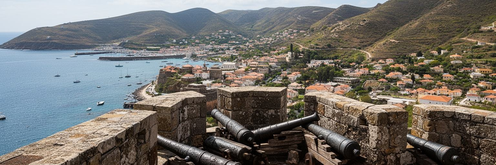
セントジョンズ周辺の要塞や砲台跡は、カリブ海が観光の海である前に、帝国の競争、海賊、戦争、砂糖貿易、防衛の海であったことを語ります。フォート・ジェームズから港を眺めると、湾を守る軍事拠点と商港の関係がよく分かります。大西洋の航路に置かれたアンティグアは、英国海軍や砂糖経済にとって重要な島であり、港と要塞はその仕組みを支えました。現在、要塞跡は散策や写真の場所になっていますが、荒廃、案内不足、ごみ、侵食、周辺開発によって意味が薄れやすいです。遺産を守るには、石壁や大砲だけでなく、そこで働かされた人々、港へ運ばれた商品、軍事施設が島社会に与えた影響も伝える必要があります。ネルソンズ・ドックヤードのような世界遺産級の場所へ向かう旅行者にとって、セントジョンズは島の歴史を読み始める入口になります。港、大聖堂、博物館、要塞、市場をつなぐ歩行ルートが整えば、観光はビーチだけに偏らず、街の理解を深めます。案内板、学校教育、地元ガイドの語りが加われば、古い石積みは写真の背景から学びの場所へ変わります。地域の若者が案内役になれば、遺産は雇用と誇りにもつながります。要塞の保存は過去を固定することではありません。海の安全、植民地支配、奴隷労働、独立後の観光がどう連続しているかを、住民と旅行者が同じ場所で考えられるようにすることです。
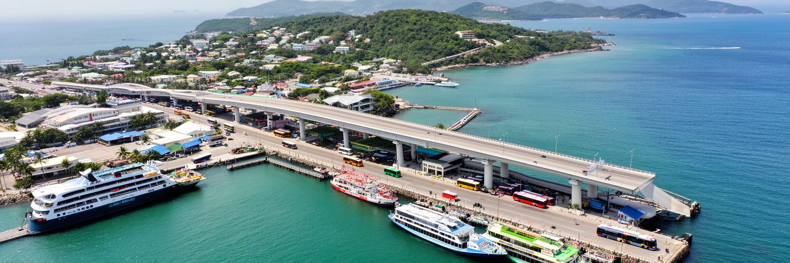
セントジョンズは、アンティグア島の道路網が集まる結節点です。空港、郊外住宅地、学校、病院、港、ビーチ、リゾート、村々へ向かう車やバス、タクシー、貨物車が首都を通ります。島は大きくありませんが、距離の短さが移動の楽さを保証するわけではありません。道路幅、駐車、歩道、排水、交差点、バスの分かりやすさ、観光車両の集中が日々の移動を左右します。クルーズ船の到着、学校時間、雨、港湾物流が重なると、都心の混雑は家族の時間や店の営業に影響します。車を持たない人にとっては、公共交通の頻度、運賃、待つ場所の日陰、安全な横断が都市へのアクセスを決めます。空港と港が近いことは観光には利点ですが、住民の買い物や通勤が観光交通に押されると不公平が生まれます。島内接続をよくするには、観光客を速く運ぶ道路だけでなく、子ども、高齢者、低所得世帯、障害のある人が安心して動ける街路を整える必要があります。停留所の情報や歩道の連続性が少し改善するだけでも、車を持たない人の時間と不安は大きく減ります。雨の日に水たまりを避けて歩けるか、夜に明るい道で帰れるかも、交通の質を測る具体的な条件です。セントジョンズの交通は大都市の地下鉄のように目立ちませんが、港、空港、学校、市場、病院をつなぐ短い道の質が、島の暮らし全体を決めています。
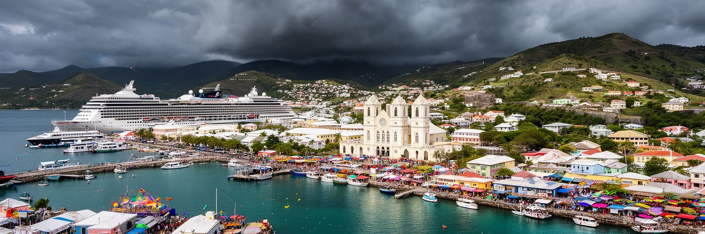
セントジョンズは、人口規模や高層ビルで存在感を示す都市ではありません。むしろ、港、官庁、大聖堂、市場、クルーズ桟橋、要塞、住宅地、空港への道が近くに集まることで、アンティグア・バーブーダという小さな島国の課題を濃く見せます。観光は外貨をもたらし、港は輸入品を運び、官庁は気候資金や海洋権益を交渉し、教会と祝祭は歴史の痛みを共同体の力へ変えます。一方で、住宅費、輸入物価、排水、ハリケーン、若者の仕事、観光への依存は、住民の日常を揺らします。港から見える明るい街並みだけでは、この都市の意味は分かりません。市場での値段、雨の日の道路、古い家の屋根、要塞の石、クルーズ船が去った後の静けさまで重ねると、首都の実像が見えてきます。セントジョンズの強さは巨大さではなく、世界市場と島の日常、植民地史と独立後の誇り、休暇地のイメージと生活の不安を、歩ける範囲で読ませる力にあります。さらに、小さな街だからこそ、政策の判断、商売の変化、災害への備えが住民の顔に近い場所で現れます。観光客の数だけでなく、住民が中心部を信頼して使えるかが都市の持続性を決めます。港の静かな朝も、その答えを示します。小さな港都を丁寧に見ることは、カリブ海の島国がどのように世界と交渉し、自分たちの暮らしを守ろうとしているかを理解する近道です。